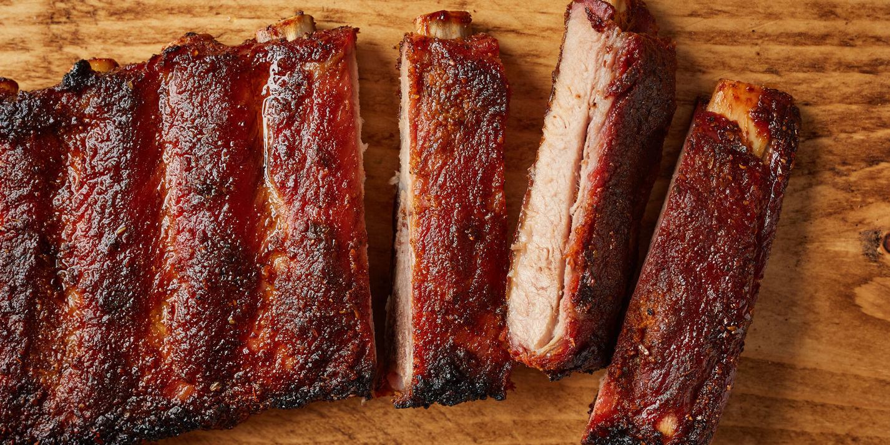

Ribs

Description:
In American cuisine, ribs usually refers to barbecue pork ribs, or sometimes beef ribs, which are served with various barbecue sauces. They are served as a rack of meat which diners customarily tear apart by hand, then eat the meat from the bone.
Ingredients:
- Ribs
- Seasonings
- Water
- Onion and garlic
- Barbecue sauce
Steps:
- Add all the ingredients (besides the sauce) to the slow cooker.
- Cook on Low for 8 hours or High for 4 hours.
- Coat the ribs with sauce and bake until the sauce caramelizes.
Return to main page